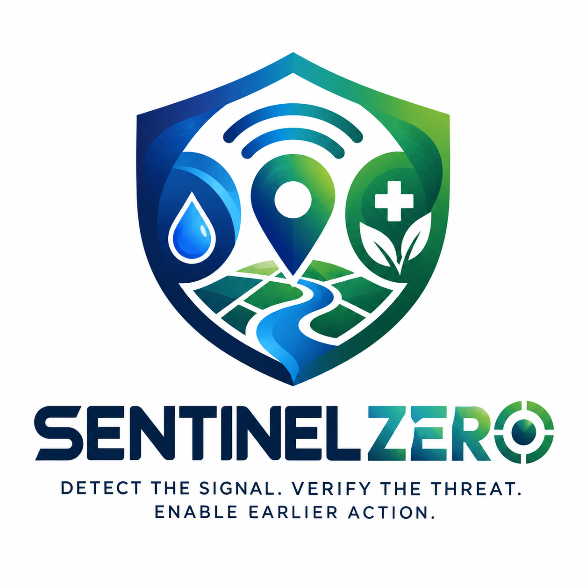

Choose a scenario. Each one runs through the same pipeline. Reports are read in English, Hindi and Odia.
Loading…
A simulated water network: source → plant → storage tanks → distribution points. Tap a place to see how the risk is built and what it would affect downstream. Dashed outline = evidence is stale or missing.
Places where risk is meaningful but evidence is stale, missing or weak.
Bars show cumulative relevant reports by day. Red bars mean the full system had an Investigate flag by that day.
The same five scenarios run through the full system and through a simple rule (5 relevant reports in 24 hours). Only one scenario is a real-style cluster.
Download results for an official or a reviewer. Coordinates are rounded to about 1 km.